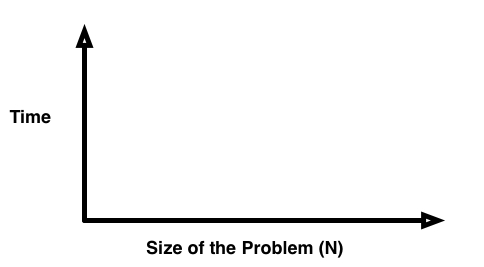
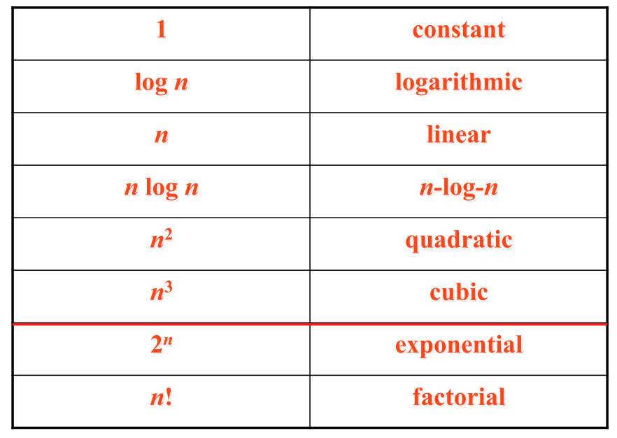
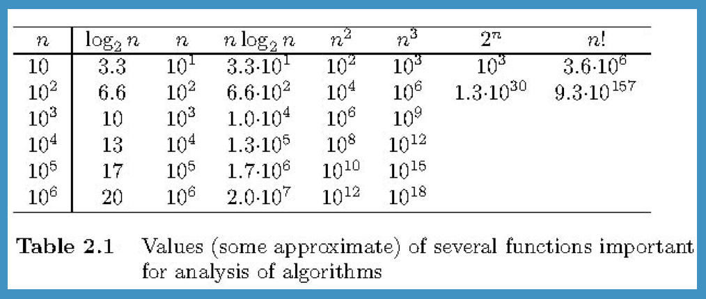

Algorithm Analysis
Objectives
- Introduce the concept of algorithmic efficiences
- Explore standard growth rate functions
- Introduce the Big-Oh notation
Class Activity
Working in a group of three, complete the following class activity.
Solution
Overview
Consider computing the sum of 1 .... n
- Sum.java
Write the summation() method.
<We shall see there are more efficient techniques for writing
this method.>
Techniques for Measuring Efficiency
We could measure in terms of time or space (memory requirements)
We could use CPU
benchmarks.
We want to classify algorithms independent of:
- Machine
- Input
- Implementation
Growth Rate Functions
We will measure in terms of time using growth rate functions.
As a problem grows in size, in general, how do we expect the amount
of time to grow?

What do we want to measure? The operation that is performed the
most!
Standard Growth Rate Functions

Orders of growth refers to
how quickly the algoithm slows down as the size of the input
increases. (Intuitively this should make sense.)
Fast growth is bad - slow growth is good.
In general
1 < log n < n
< n log n < n^2 < n^3 < 2^n < n!
What the Numbers Mean

Measuring Simple Loops
What is the growth rate function of summation() for
Algorithm #1? For Algorithm #2?
What are the growth rate functions for the following loops?
(a)
for (int i = 0; i < N; i++) {
System.out.println(i);
}
(b)
for (int i = 0; i < N; i++) {
for
(int
j
=
0; j < N; j++) {
System.out.println(i+j);
}
}
(c)
for (int i = 0; i < N; i++) {
for
(int
j
=
0;
j < i; j++) {
System.out.println(i+j);
}
}
Big-Oh Notation
The Big-Oh notation formalizes growth rate functions:
f(n) <= c * g(n) for
all n >= n0
We say f(n) is Ο(g(n))
What is the Big-oh notation for Algorithms #1 and #2?
|
Why should I Care?
(or Computers are Just Getting Faster)
Consider the Towers
of Hanoi.
Some Numbers
If N = 1,000,000 at the rate of 1,000,000 operations per
second
g(n)
|
time
|
log n
|
0.0000199 seconds
|
n
|
1 second
|
n log n
|
19.9 seconds
|
n^2
|
11.6 days
|
n^3
|
31,708 years
|
2^n
|
10^(301,016) years
|
|
In Practice
Using the ArrayBag
class, answer the following questions: (Note we have eliminated the
ensureCapacity() method)
1. We use the letter n generically, what does n refer to
in ArrayBag?
2. What is the Big-oh notation of the following methods:
add()
getSize()
getCapacity()
indexOf()
remove()
addAll()